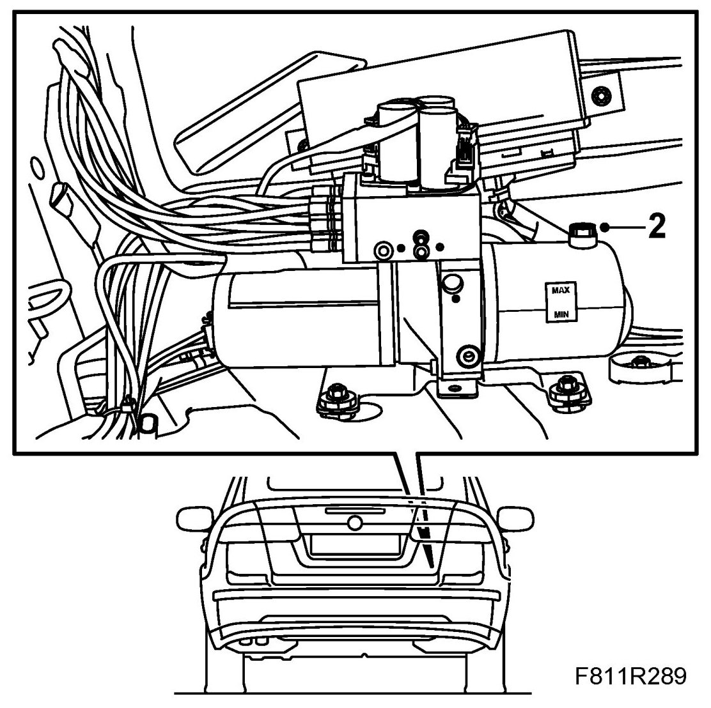
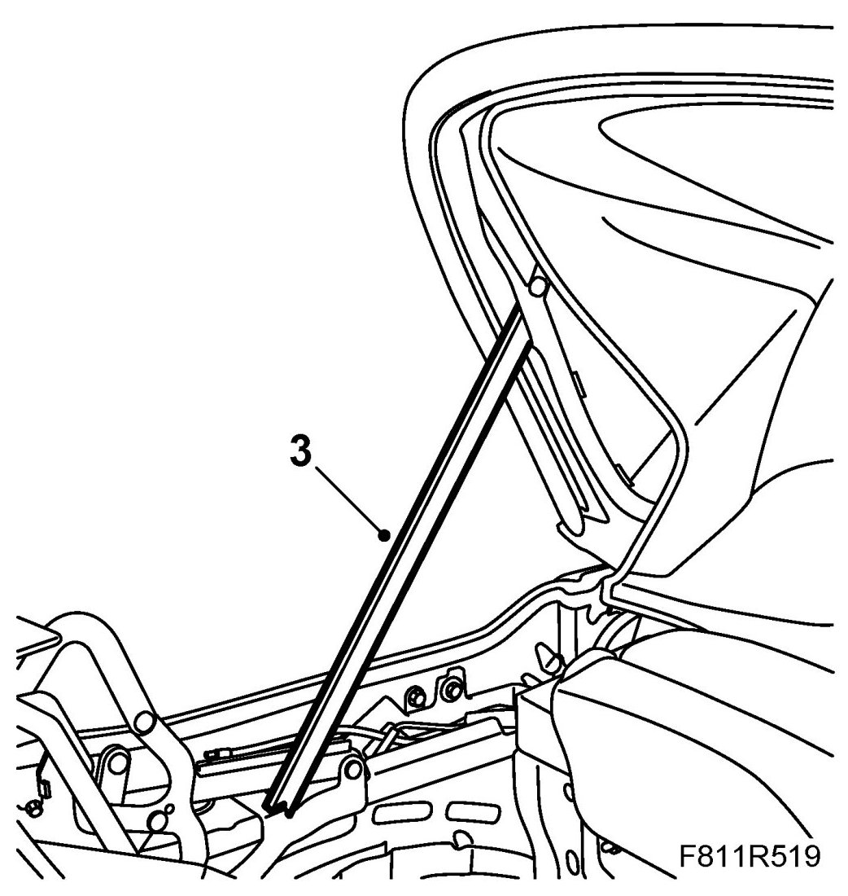
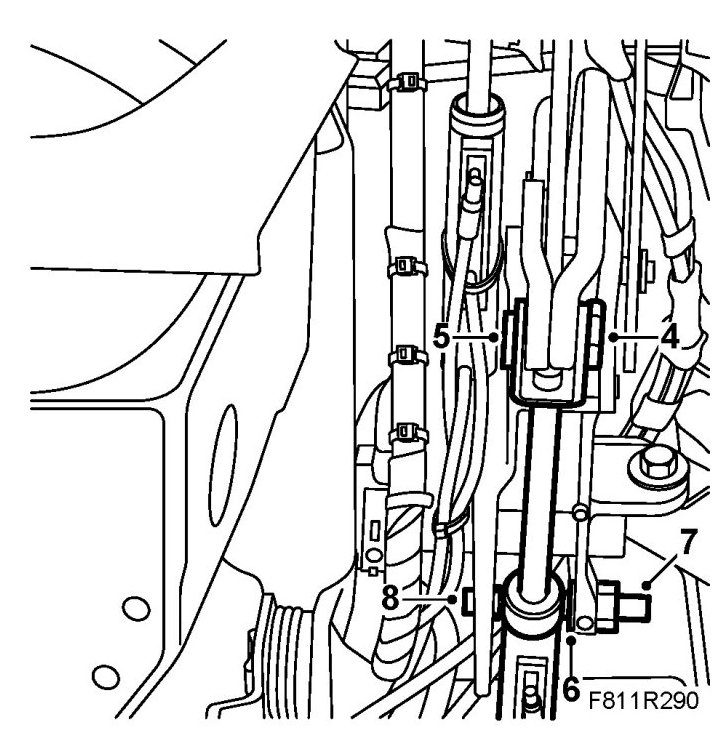
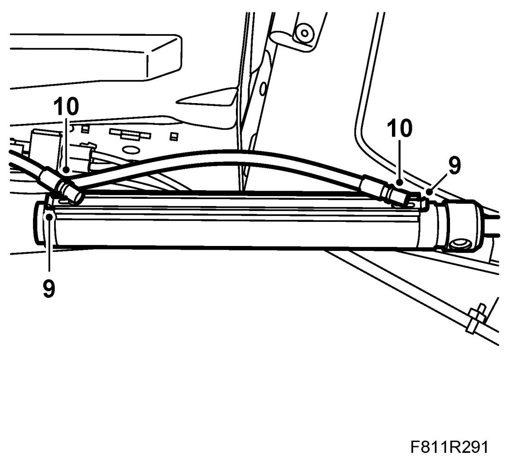
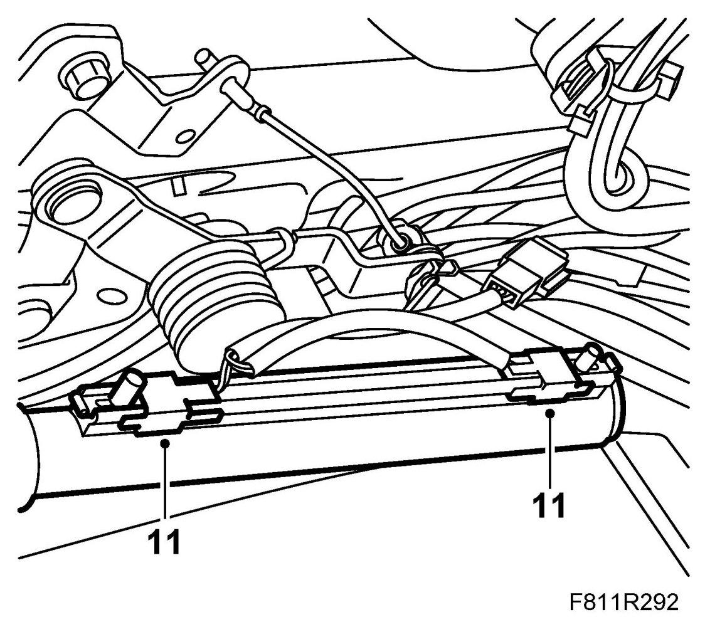
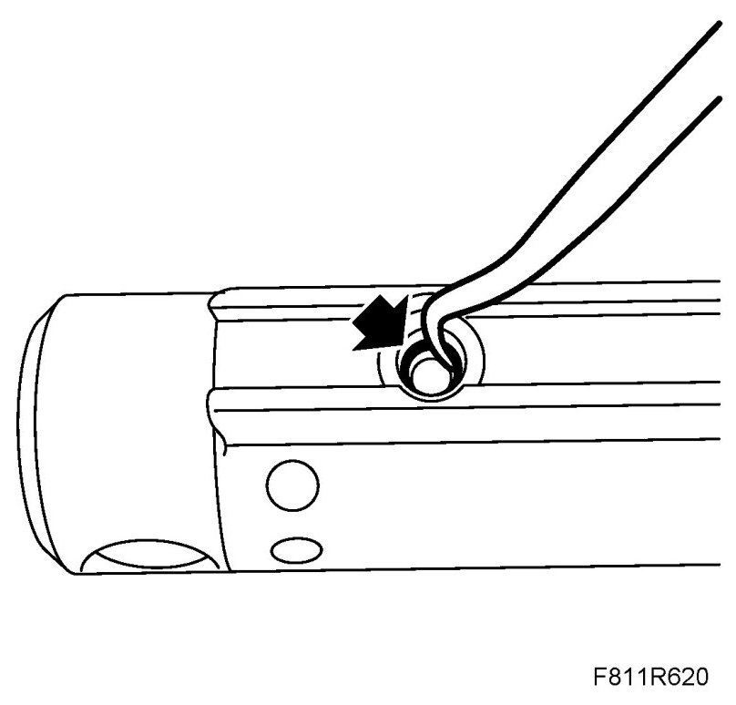
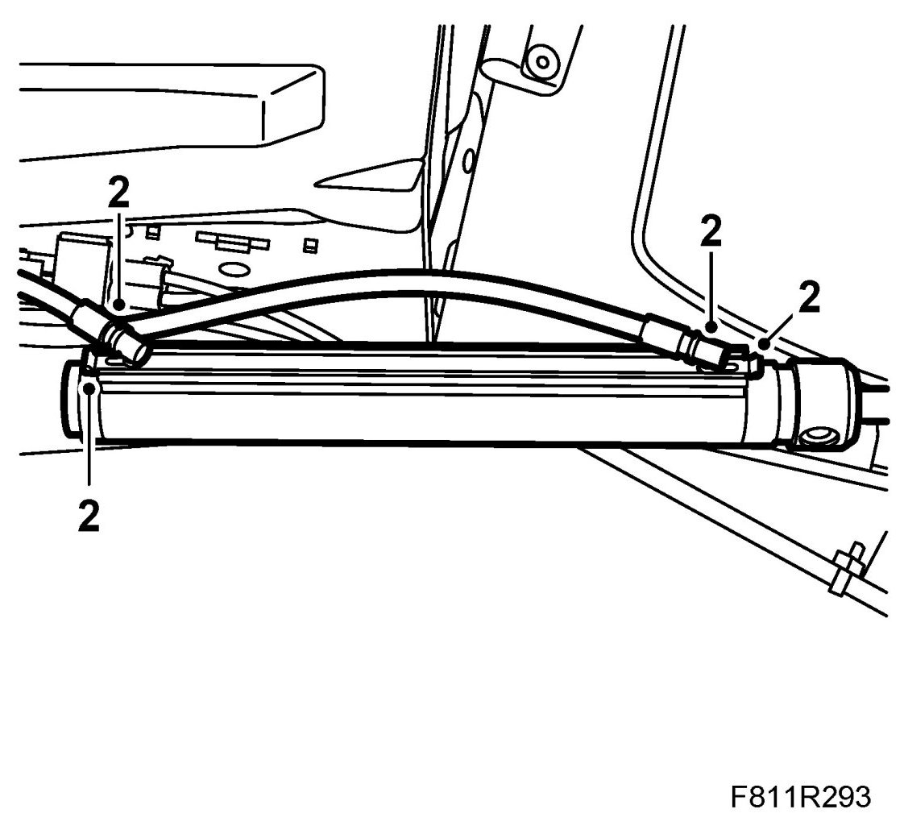
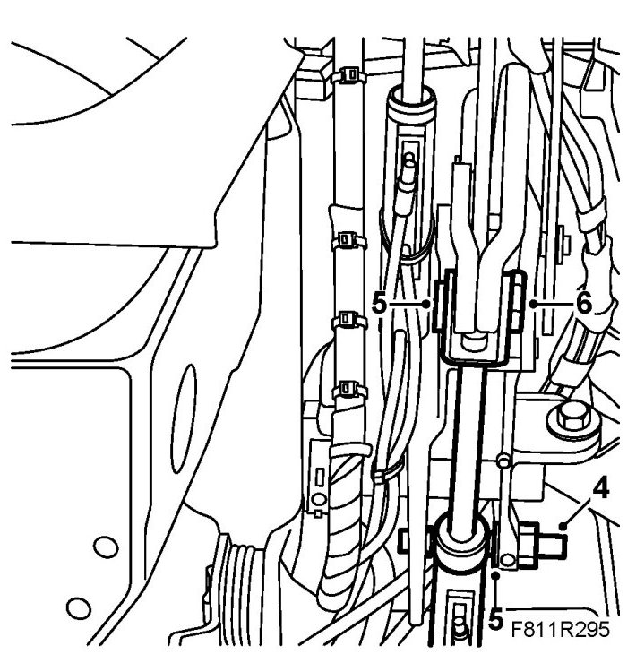

Soft Top Hydraulic Cylinder
Soft Top Hydraulic Cylinder
Removing
1. Remove Luggage compartment side trim, CV (right-hand side only).
2. Remove the fluid filler plug from the hydraulic system reservoir (to equalise the pressure). Refit the plug.

3. Open the soft top cover. Raise the sixth bow and support it with the soft top support.

4. Remove the lock on the fastening pin for the hydraulic cylinder piston rod.

5. Remove the pin for the hydraulic cylinder piston rod.
6. Remove the lock for the main cylinder outer fastening pin.
7. Remove the outer pin (by the spanner flats).
8. Pull the main cylinder to the side so that it comes loose from the inner pin.
9. Remove the hydraulic line retaining clips by pulling them out. Place some paper under the hydraulic cylinder to catch any hydraulic fluid that may run out.

10. Pull out the hydraulic lines from the hydraulic cylinder and remove the hydraulic cylinder.
IMPORTANT: Mark the hydraulic lines and their connection on the hydraulic cylinder as they must not get mixed up.
11. If the right-hand main cylinder is being changed, the main cylinder position sensor must also be removed. Use a screwdriver to carefully loosen the two position sensors from the main cylinder. Move the hydraulic line to one side at the same time.
IMPORTANT: Cables to hydraulic lines and position sensors must be refitted as they were earlier or there will be a risk of them being damaged when the soft top and soft top cover are operated.

Fitting
1. Fit the position sensors to the cylinder where appropriate.
2. Remove the O-rings of the hydraulic cylinder using a blunt tool. Check the Orings and replace as necessary. Then fit the O-rings on the hydraulic lines before refitting the lines on the hydraulic cylinder. Use only one O-ring per hydraulic line.

Attach the hydraulic lines to the hydraulic cylinder by pressing them in.

IMPORTANT: Cables to hydraulic lines and position sensors must be refitted as they were earlier or there will be a risk of them being damaged when the soft top and soft top cover are operated.
3. Fit the cylinder to the inner fastening pin.
4. Press in the outer pin (by the spanner flats) and fit the lock.

5. Fit the pin to the cylinder piston rod.
6. Fit the lock to the fastening pin.
7. Remove the soft top support and close the soft top and soft top cover.
8. Open and close the soft top for 5 complete cycles to bleed the system and check its function.
9. Check for any fluid leaks.
10. Check the oil level and top up as necessary. See Checking/filling oil
11. Fit Luggage compartment side trim.
12. Connect the diagnostics tool and erase any diagnostic trouble code.